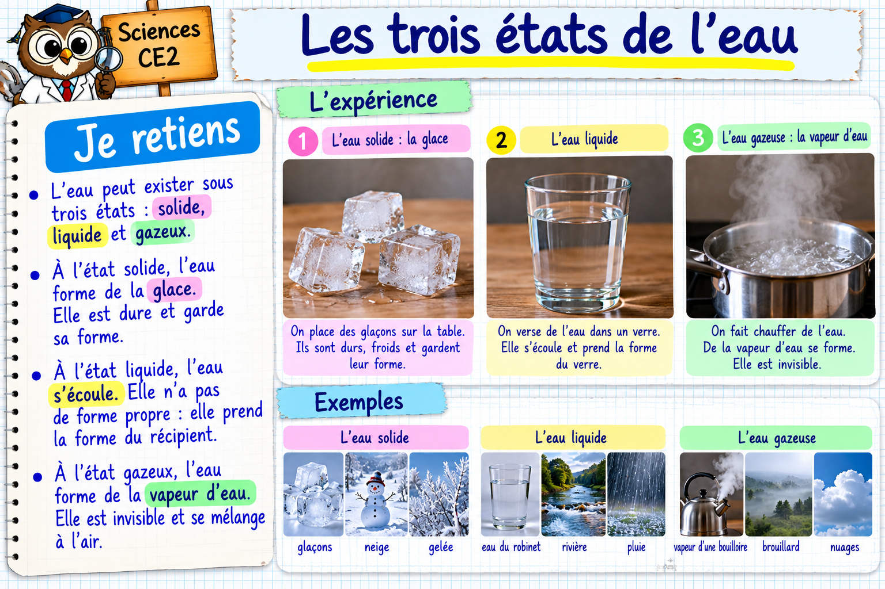

Je m’entraîne avec Maître Hibou
Exercice 1 / 10J’observe, je manipule, puis je relève des défis de plus en plus difficiles.
Tu peux réessayer : une erreur aide à apprendre !

J’observe, je manipule, puis je relève des défis de plus en plus difficiles.
Tu peux réessayer : une erreur aide à apprendre !